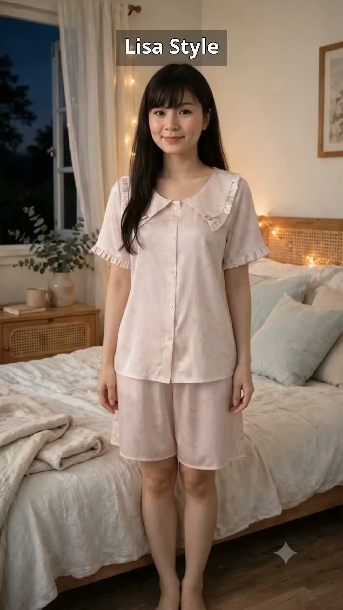
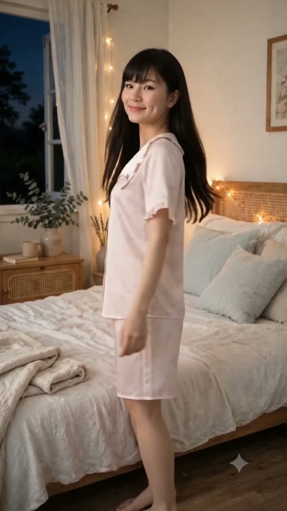
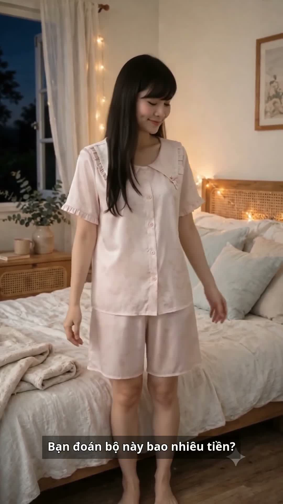
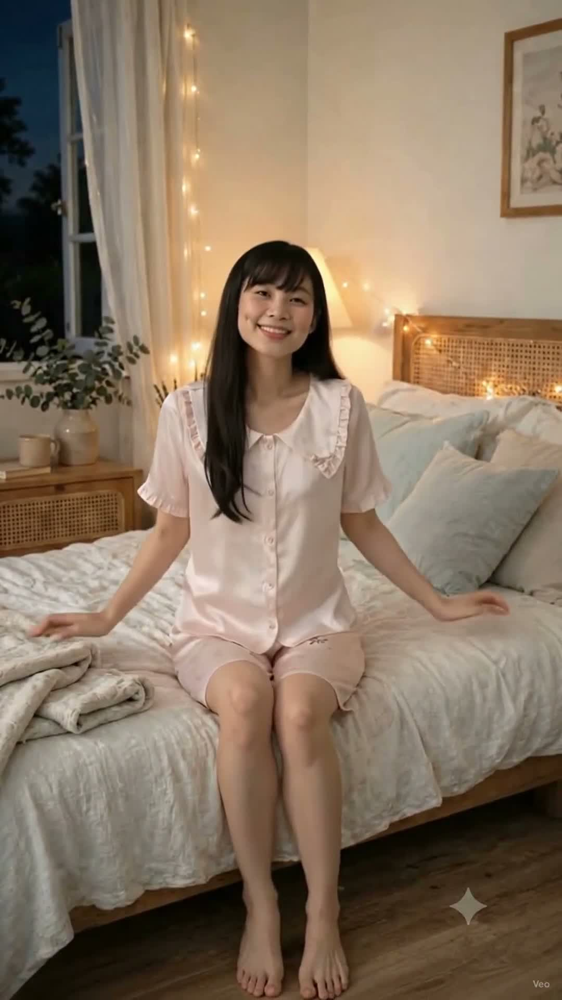

Bộ mặc nhà lụa Mialala 5464 màu Hồng: lụa mây mềm mát, mặc đi ngủ vẫn xinh

Tối nay chuẩn bị đi ngủ, Lisa chọn bộ mặc nhà lụa Mialala 5464 màu Hồng: áo cộc tay cổ sen bèo có nơ nhỏ, cúc trước, tay bèo; quần ngắn; lụa mây in họa tiết bướm hoa nhẹ nhàng. Lụa mềm mát, mặc vào ngủ ngon hẳn, sáng dậy vẫn xinh — đi ngủ mà nhìn như đi tiệc vậy đó.
Đọc trước khi mua: bài viết này là gợi ý phối đồ lấy cảm hứng từ mẫu bộ mặc nhà lụa đang bán chạy trên Shopee. Lisa là nhân vật AI, nên bài viết không phải bài đánh giá sản phẩm Lisa đã mặc thật hay đã dùng thử. Giá, chất liệu và size cần kiểm tra lại trên trang bán trước khi mua. Link mua hàng (affiliate — mua qua link, Lisa Style có thể nhận một khoản hoa hồng nhỏ mà giá bạn trả không đổi): Bộ mặc nhà lụa Mialala 5464 màu Hồng — 467.100đ sau voucher, đã bán 10k+, 4,9 sao.
Cùng một bộ lụa Hồng, nhìn lúc xoay nhẹ khoe dáng, lúc đứng ngắm nghía và lúc ngồi mép giường cười duyên sẽ khác nhau — xem đủ 3 góc rồi hãy quyết có hợp với bạn không:

Xoay nhẹ — cổ sen bèo, tay bèo xinh

Đứng ngắm — cúc trước, lụa mềm rủ

Ngồi mép giường — quần ngắn mát, cười duyên
Vì sao bộ lụa Hồng hợp đi ngủ?
Lụa mây mềm mát, thoáng da: vải lụa mây mềm, mát, không bí — mặc cả đêm vẫn thoải mái, sáng dậy da không bị hằn hay khó chịu.
Cổ sen bèo + nơ nhỏ, điệu mà không sến: cổ sen bèo viền bèo nhỏ với nơ xinh ở giữa làm điểm nhấn dịu dàng; cúc trước tiện mặc, tiện cởi.
Quần ngắn mát, không vướng: quần ngắn vừa đủ mát mà không hở quá; lăn lộn khi ngủ không bị xoắn hay vướng víu.
Họa tiết bướm hoa nhẹ nhàng: lụa in họa tiết bướm, hoa mờ trên nền hồng nhạt — nhìn kỹ mới thấy, không rối mắt, hợp với không gian phòng ngủ ấm áp.
Cách chọn đồ mặc nhà lụa cho dáng nhỏ
Áo vừa vai, không rộng thùng thình: áo cộc tay vừa vai, cổ sen gọn sẽ giữ dáng nhỏ không bị "nuốt"; áo lụa rộng quá trông sẽ luộm thuộm khi ngồi hay nằm.
Quần ngắn vừa tới giữa đùi: quần ngắn tới giữa đùi là vừa với dáng nhỏ; ngắn quá thì không thoải mái, dài quá lại mất mát.
Màu hồng nhạt, da nào cũng hợp: hồng nhạt dịu, không chói — da sáng mặc vào tươi hơn, da ấm mặc vào cũng không bị tối đi.
Chọn bộ có đủ màu để đổi gió: bộ này có cả quần ngắn với quần dài; mùa nóng mặc quần ngắn, trời se lạnh đổi sang quần dài là vừa.
Mẹo mặc đồ ngủ lụa trong 3 phút
Đi ngủ mỗi tối: mặc bộ lụa Hồng, xõa tóc dài thẳng, thắp thêm đèn ngủ vàng ấm — phòng ngủ nhìn như trong phim, ngủ cũng ngon hơn.
Muốn điệu hơn: buộc tóc nửa đầu, đeo khuyên tai ngọc trai nhỏ; tránh vòng cổ to sẽ vướng khi nằm.
Giữ lụa bền đẹp: giặt tay với nước lạnh, phơi trong bóng râm; đừng vắt mạnh hay phơi nắng gắt, lụa sẽ mất độ bóng mềm.